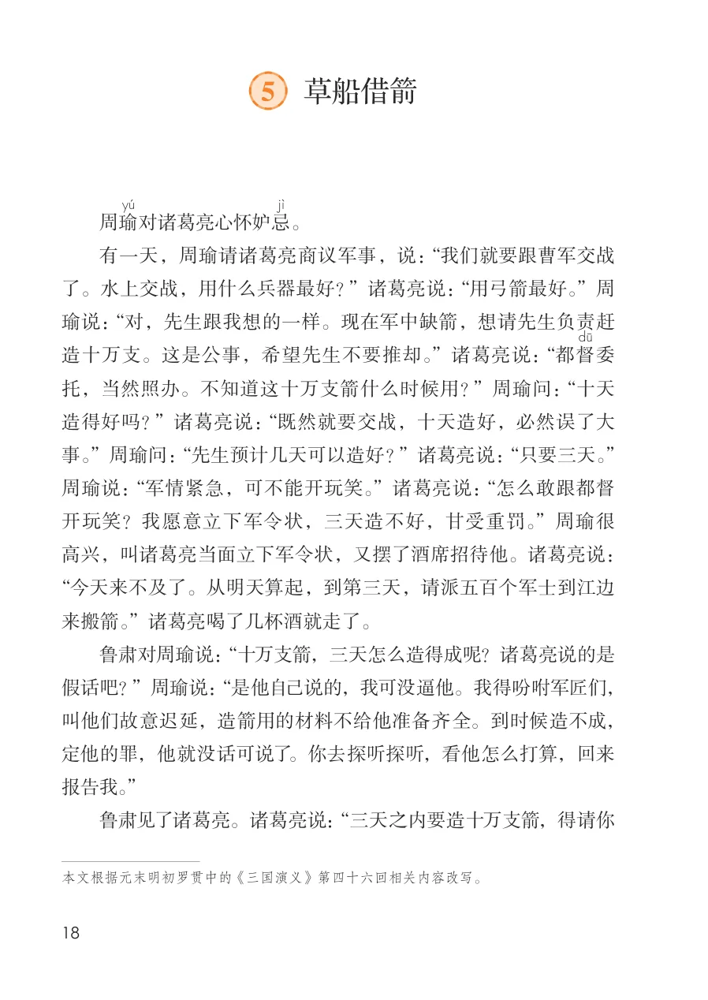
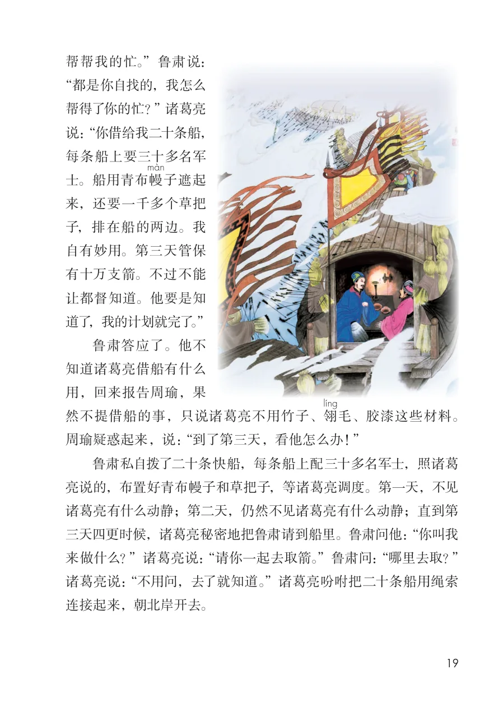
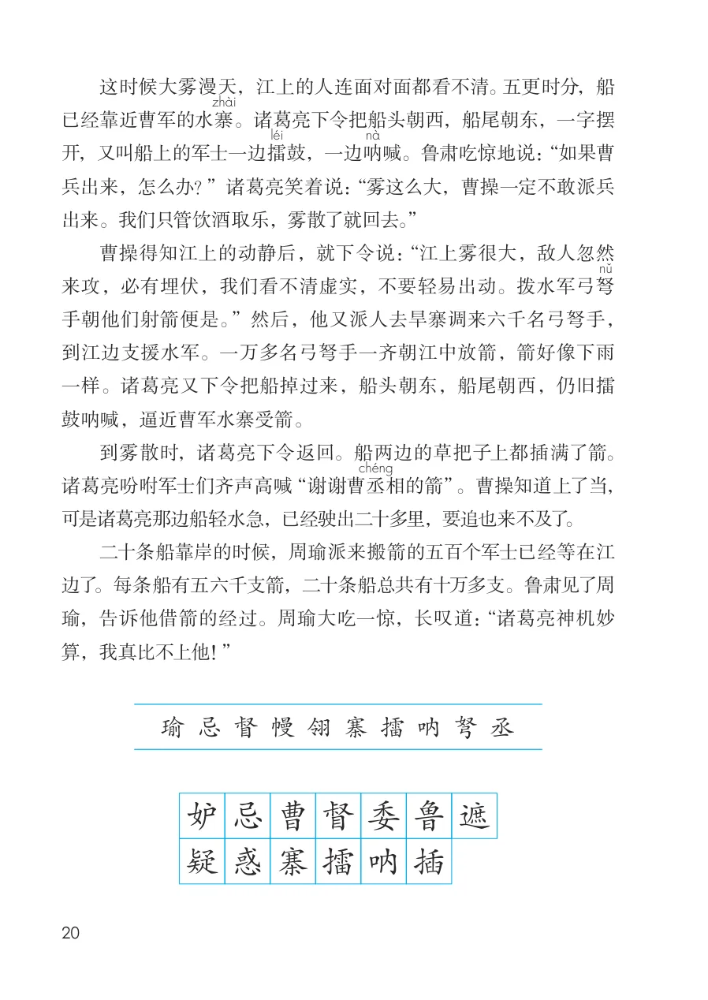
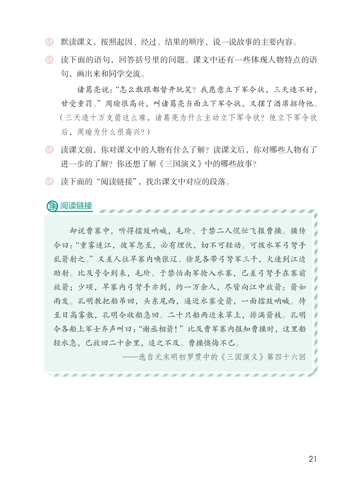

展开章节菜单
5 草船借箭
周瑜
对诸葛亮心怀妒忌
。
有一天，周瑜请诸葛亮商议军事，说：“我们就要跟曹军交战了。水上交战，用什么兵器最好？”诸葛亮说：“用弓箭最好。”周瑜说：“对，先生跟我想的一样。现在军中缺箭，想请先生负责赶造十万支。这是公事，希望先生不要推却。”诸葛亮说：“都督
委托，当然照办。不知道这十万支箭什么时候用？”周瑜问：“十天造得好吗？”诸葛亮说：“既然就要交战，十天造好，必然误了大事。”周瑜问：“先生预计几天可以造好？”诸葛亮说：“只要三天。”周瑜说：“军情紧急，可不能开玩笑。”诸葛亮说：“怎么敢跟都督开玩笑？我愿意立下军令状，三天造不好，甘受重罚。”周瑜很高兴，叫诸葛亮当面立下军令状，又摆了酒席招待他。诸葛亮说：
“今天来不及了。从明天算起，到第三天，请派五百个军士到江边来搬箭。”诸葛亮喝了几杯酒就走了。
鲁肃对周瑜说：“十万支箭，三天怎么造得成呢？诸葛亮说的是假话吧？”周瑜说：“是他自己说的，我可没逼他。我得吩咐军匠们，叫他们故意迟延，造箭用的材料不给他准备齐全。到时候造不成，定他的罪，他就没话可说了。你去探听探听，看他怎么打算，回来报告我。”
鲁肃见了诸葛亮。诸葛亮说：“三天之内要造十万支箭，得请你
本文根据元末明初罗贯中的 《三国演义》第四十六回相关内容改写。
查看教材原页（保留全部图片、注音与原始排版）

帮帮我的忙。”鲁肃说：
“都是你自找的，我怎么
帮得了你的忙？” 诸葛亮
说：“你借给我二十条船，
每条船上要三十多名军
士。船用青布幔
子遮起
来，还要一千多个草把
子，排在船的两边。我
自有妙用。第三天管保
有十万支箭。不过不能
让都督知道。他要是知
道了，我的计划就完了。”
鲁肃答应了。他不
用，回来报告周瑜，果
然不提借船的事，只说诸葛亮不用竹子、翎
毛、胶漆这些材料。
周瑜疑惑起来，说：“到了第三天，看他怎么办！”
鲁肃私自拨了二十条快船，每条船上配三十多名军士，照诸葛
亮说的，布置好青布幔子和草把子，等诸葛亮调度。第一天，不见
诸葛亮有什么动静；第二天，仍然不见诸葛亮有什么动静；直到第
三天四更时候，诸葛亮秘密地把鲁肃请到船里。鲁肃问他：“你叫我
来做什么？”诸葛亮说：“请你一起去取箭。”鲁肃问：“哪里去取？”
诸葛亮说：“不用问，去了就知道。”诸葛亮吩咐把二十条船用绳索
连接起来，朝北岸开去。
查看教材原页（保留全部图片、注音与原始排版）

这时候大雾漫天，江上的人连面对面都看不清。五更时分，船已经靠近曹军的水寨
。诸葛亮下令把船头朝西，船尾朝东，一字摆开，又叫船上的军士一边擂
鼓，一边呐
喊。鲁肃吃惊地说：“如果曹兵出来，怎么办？”诸葛亮笑着说：“雾这么大，曹操一定不敢派兵出来。我们只管饮酒取乐，雾散了就回去。”
曹操得知江上的动静后，就下令说：“江上雾很大，敌人忽然来攻，必有埋伏，我们看不清虚实，不要轻易出动。拨水军弓弩手朝他们射箭便是。”然后，他又派人去旱寨调来六千名弓弩手，到江边支援水军。一万多名弓弩手一齐朝江中放箭，箭好像下雨一样。诸葛亮又下令把船掉过来，船头朝东，船尾朝西，仍旧擂鼓呐喊，逼近曹军水寨受箭。
到雾散时，诸葛亮下令返回。船两边的草把子上都插满了箭。诸葛亮吩咐军士们齐声高喊“谢谢曹丞
相的箭”。曹操知道上了当，可是诸葛亮那边船轻水急，已经驶出二十多里，要追也来不及了。
二十条船靠岸的时候，周瑜派来搬箭的五百个军士已经等在江边了。每条船有五六千支箭，二十条船总共有十万多支。鲁肃见了周瑜，告诉他借箭的经过。周瑜大吃一惊，长叹道：“诸葛亮神机妙算，我真比不上他！”
查看教材原页（保留全部图片、注音与原始排版）

诸葛亮说：“怎么敢跟都督开玩笑？我愿意立下军令状，三天造不好，
甘受重罚。”周瑜很高兴，叫诸葛亮当面立下军令状，又摆了酒席招待他。
（三天造十万支箭这么难，诸葛亮为什么主动立下军令状？他立下军令状
后，周瑜为什么很高兴？）
读课文前，你对课文中的人物有什么了解？读课文后，你对哪些人物有了
进一步的了解？你还想了解《三国演义》中的哪些故事？
却说曹寨中，听得擂鼓呐喊，毛玠、于禁二人慌忙飞报曹操。操传
令曰：“重雾迷江，彼军忽至，必有埋伏，切不可轻动。可拨水军弓弩手
乱箭射之。”又差人往旱寨内唤张辽、徐晃各带弓弩军三千，火速到江边
助射。比及号令到来，毛玠、于禁怕南军抢入水寨，已差弓弩手在寨前
放箭；少顷，旱寨内弓弩手亦到，约一万余人，尽皆向江中放箭：箭如
雨发。孔明教把船吊回，头东尾西，逼近水寨受箭，一面擂鼓呐喊。待
至日高雾散，孔明令收船急回。二十只船两边束草上，排满箭枝。孔明
令各船上军士齐声叫曰：“谢丞相箭！”比及曹军寨内报知曹操时，这里船
轻水急，已放回二十余里，追之不及。曹操懊悔不已。
查看教材原页（保留全部图片、注音与原始排版）
